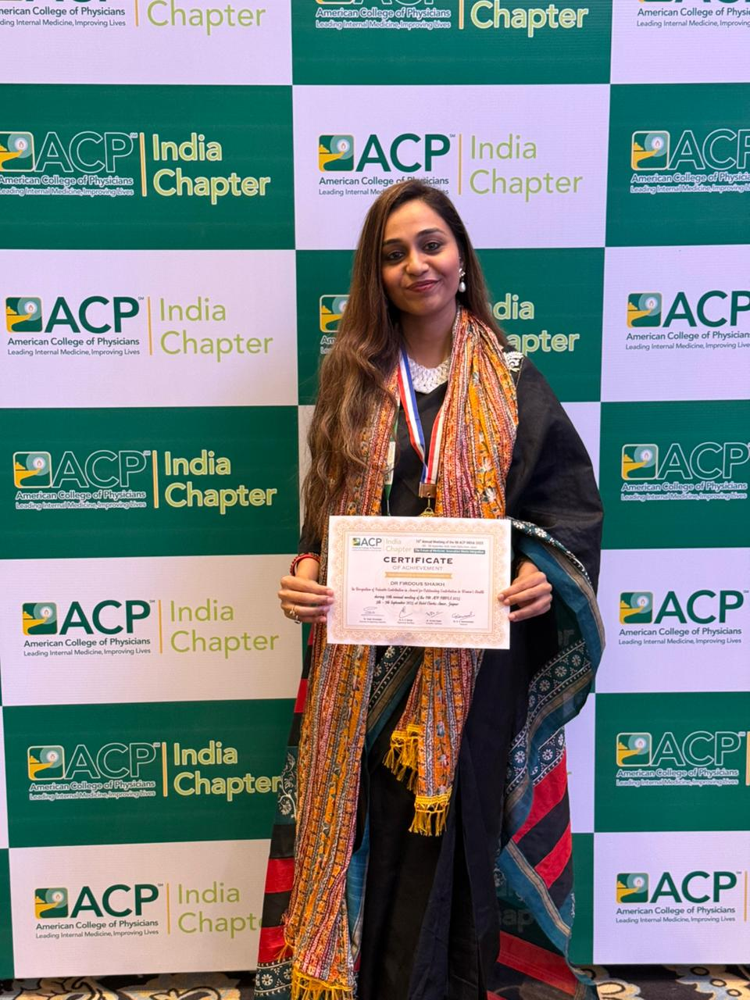

15+
Years Experience
10k+
Patients Treated
100+
Free Camps
Gold
Medalist
Biography & Career Journey
A Lifetime Dedicated to Metabolic Health & Patient Wellbeing
Dr. Firdous Shaikh is one of Mumbai’s most trusted Diabetologists and Women’s Metabolic Health Experts. As the founder of Jyoti Clinic in Bandra West, she has devoted over 15 years to reforming diabetes care and metabolic wellness across Western India.
After graduating with top academic honors (Gold Medal in Diabetology), Dr. Shaikh pursued specialized advanced training in cardiovascular risk prevention, PCOS, thyroid disorders, and gestational diabetes. Her medical methodology merges rigorous clinical diagnostics with lifestyle counseling, emotional health support, and patient education.
Gold Medalist Diabetology
Founder, Jyoti Clinic